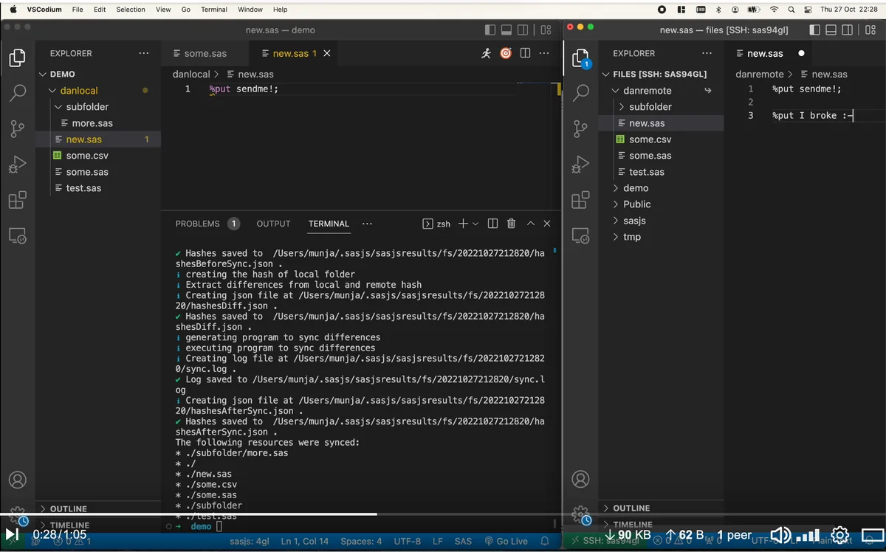

sasjs fs¶
The sasjs fs command allows users to manage a remote SAS (physical) filesystem from a local machine. No SSH or FTP accounts are necessary - the tool makes use of the APIs (Viya, SASjs Server) or a SAS EBI STP runner.
Not to be confused with:
- the logical SAS Folders (eg SAS Drive or Metadata BIP Tree), managed using the
sasjs foldercommand. - the regular
sasjs compilecommand, which creates self-contained Jobs / Services / Tests that do not require a filesystem.

It is also possible to use this feature natively within the SASjs VSCode Extension - https://github.com/sasjs/vscode-extension#directory-synchronisation.
Prerequisites¶
Before using this command, you will need to:
Syntax¶
Additional arguments may include:
| Option | Alias | Sub commands | Description |
|---|---|---|---|
--target |
-t |
all three | The target whose server holds the files. Needs serverUrl and serverType. Defaults to defaultTarget in sasjsconfig.json, then the global .sasjsrc. |
--local |
-l |
sync, deploy |
The local folder to send. A relative path is taken from the project root. |
--remote |
-r |
sync, deploy |
The folder on the SAS server that receives it. |
--output |
-o |
all three | compile: the path of the program to write (a .sas extension is added). sync and deploy: a folder for the log. Both default to a timestamped folder under sasjsbuild / sasjsresults. |
sasjs fs compile¶
Used to generate a single SAS program that contains all the files (and subdirectories) of a given LOCAL folder. This program can be executed in any flavour of SAS to generate the files on the SAS server - simply set %let fsTarget=/your/target/folder; and run the program.
To preserve encoding and special characters, as well as to enable the compilation of binary content, all files are base64 encoded.
Syntax¶
sasjs fs compile <localFolder> -o <programPath>
Usage¶
An extract from such a compiled program is shown below:
%mf_mkdir(&fsTarget)
filename _in64 temp lrecl=99999999;
data _null_;
file _in64;
put 'ewogICIkc2NoZW1hIjogImh0dHBzOi8vY2xpLnNhc2pzLmlvL3Nhc2pzY29uZmlnLXNjaGVtYS5qc29uIiwKICAiZG9jQ29uZmlnIjogewogICAgImVuYWJsZUxpbmVhZ2UiOiB0cnVlLAogICAgImRveHlDb250ZW50IjogewogICAgICAicmVhZE1lIjogIi4uLy4uL1JFQURNRS5tZCIKICAg'@;
put 'IH0sCiAgICAib3V0RGlyZWN0b3J5IjogInB1YmxpYy9kb2NzL3N0YXRpYy9zYXMiCiAgfSwKICAibWFjcm9Gb2xkZXJzIjogWyJzYXNqcy9tYWNyb3MiXSwKICAicHJvZ3JhbUZvbGRlcnMiOiBbXSwKICAic2VydmljZUNvbmZpZyI6IHsKICAgICJzZXJ2aWNlRm9sZGVycyI6IFsic2FzanMv'@;
put 'c2VydmljZXMvY29tbW9uIiwgInNhc2pzL3NlcnZpY2VzL2ZpbGVzIl0sCiAgICAiaW5pdFByb2dyYW0iOiAic2FzanMvc2VydmljZXMvc2VydmljZWluaXQuc2FzIgogIH0sCiAgInN0cmVhbUNvbmZpZyI6IHsKICAgICJzdHJlYW1XZWIiOiB0cnVlLAogICAgInN0cmVhbVdlYkZvbGRlciI6'@;
put 'ICJ3ZWJ2IiwKICAgICJ3ZWJTb3VyY2VQYXRoIjogImJ1aWxkIgogIH0sCiAgImRlZmF1bHRUYXJnZXQiOiAidml5YSIsCiAgInRhcmdldHMiOiBbCiAgICB7CiAgICAgICJuYW1lIjogInZpeWEiLAogICAgICAic2VydmVyVXJsIjogImh0dHBzOi8vYXp1cmV1c2UwMTEwNTkubXktdHJpYWxz'@;
put 'LnNhcy5jb20vIiwKICAgICAgInNlcnZlclR5cGUiOiAiU0FTVklZQSIsCiAgICAgICJhcHBMb2MiOiAiL1B1YmxpYy9hcHAvcmVhY3Qtc2VlZC1hcHAiLAogICAgICAiY29udGV4dE5hbWUiOiAiU0FTIEpvYiBFeGVjdXRpb24gY29tcHV0ZSBjb250ZXh0IgogICAgfSwKICAgIHsKICAgICAg'@;
put 'Im5hbWUiOiAic2VydmVyIiwKICAgICAgInNlcnZlclVybCI6ICJodHRwOi8vbG9jYWxob3N0OjUwMDAiLAogICAgICAic2VydmVyVHlwZSI6ICJTQVNKUyIsCiAgICAgICJodHRwc0FnZW50T3B0aW9ucyI6IHsKICAgICAgICAiYWxsb3dJbnNlY3VyZVJlcXVlc3RzIjogZmFsc2UKICAgICAg'@;
put 'fSwKICAgICAgImFwcExvYyI6ICIvUHVibGljL2FwcC9yZWFjdC1zZWVkLWFwcCIsCiAgICAgICJkZXBsb3lDb25maWciOiB7CiAgICAgICAgImRlcGxveVNlcnZpY2VQYWNrIjogdHJ1ZSwKICAgICAgICAiZGVwbG95U2NyaXB0cyI6IFtdCiAgICAgIH0sCiAgICAgICJzdHJlYW1Db25maWci'@;
put 'OiB7CiAgICAgICAgInN0cmVhbUxvZ28iOiAibG9nbzUxMi5wbmciLAogICAgICAgICJzdHJlYW1TZXJ2aWNlTmFtZSI6ICJSZWFjdCIsCiAgICAgICAgInN0cmVhbVdlYiI6IHRydWUsCiAgICAgICAgInN0cmVhbVdlYkZvbGRlciI6ICJ3ZWIiLAogICAgICAgICJ3ZWJTb3VyY2VQYXRoIjog'@;
put 'ImJ1aWxkIiwKICAgICAgICAiYXNzZXRQYXRocyI6IFtdCiAgICAgIH0KICAgIH0sCiAgICB7CiAgICAgICJuYW1lIjogInNhczkiLAogICAgICAic2VydmVyVHlwZSI6ICJTQVM5IiwKICAgICAgImFwcExvYyI6ICIvU2hhcmVkIERhdGEvc2FzanMvcmVhY3Qtc2VlZC1hcHAiLAogICAgICAi'@;
put 'ZGVwbG95Q29uZmlnIjogewogICAgICAgICJkZXBsb3lTZXJ2aWNlUGFjayI6IHRydWUKICAgICAgfSwKICAgICAgInNlcnZlck5hbWUiOiAiU0FTQXBwIiwKICAgICAgInJlcG9zaXRvcnlOYW1lIjogIkZvdW5kYXRpb24iCiAgICB9CiAgXQp9Cg==';
run;
filename _out64 "&fsTarget/sasjsconfig.json";
/* convert from base64 */
data _null_;
length filein 8 fileout 8;
filein = fopen("_in64",'I',4,'B');
fileout = fopen("_out64",'O',3,'B');
char= '20'x;
do while(fread(filein)=0);
length raw $4 ;
do i=1 to 4;
rc=fget(filein,char,1);
substr(raw,i,1)=char;
end;
rc = fput(fileout, input(raw,$base64X4.));
rc =fwrite(fileout);
end;
rc = fclose(filein);
rc = fclose(fileout);
run;
filename _in64 clear;
filename _out64 clear;
sasjs fs deploy¶
Compiles a local folder into a SAS program and executes it on the target in one step, so the files arrive in the remote folder without you saving and running the program yourself.
Syntax¶
The folders are passed with --local (-l) and --remote (-r); --output (-o) sets a folder for the log.
Usage¶
Deploy or sync?¶
deploy always writes the whole tree. sync compares hashes first and sends only what differs, which is what you want for routine updates; deploy is for a first load, or when the remote copy is suspect.
sasjs fs sync¶
Will hash up a remote SAS filesystem, compare with local hashes, and deploy only the differences. Will also create the folder(s) on the remote server if necessary (if the SAS user account has the requisite permissions).
Here's a demo video:
Syntax¶
sasjs fs sync -l <localFolder> -r <remoteFolder> -t targetName
Can also be used without the arguments, taking values from the sasjsconfig.json file, eg:
sasjs fs sync
or
sasjs fs sync -t myTarget
Known Limitations¶
The following issues exist with the current implementation - they do not affect the functionality (syncing local directory with remote) but we do plan to address them in a future release:
- If
remoteFolderpath is relative, or contains a tilde (eg./somediror~/somedir), the terminal response will incorrectly state that there were sync issues. This is due to path expansion affecting the comparison. In fact the files were deployed successfully. - If a file is deleted locally, it will not be deleted remotely. This part has not been built yet.
- If a file in a subdirectory is renamed it will not be re-synced. This is due to hash compares at folder level being based only on file content. We will change the algorithm to include filenames when hashing folder content into a folder hash.